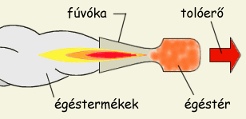
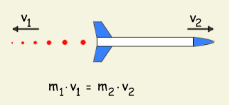
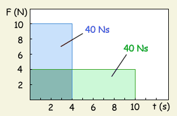
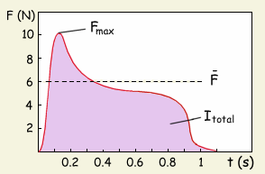
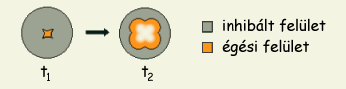

Az itt következő elméleti rész csupán felületes tárgyalása a rakétamotrok működési jellemzőinek, célja a rakétázás kapcsán előforduló fontosabb fogalmak és paraméterek ismertetése. Néhány jellemzőről részletesebben is szó esik majd a fúvóka c. fejezetben, ám aki valóban rakétamotor tervezésébe fogna, annak ajánlatos valami komolyabb irodalmat, rakétás szakkönyveket áttanulmányozni.
A klasszikus rakétamotor legfontosabb részei az égéskamra, amelyben az üzemanyag égése zajlik, valamint a fúvóka, amely a kiáramló égéstermékeket hivatott minél nagyobb sebességre felgyorsítani, illetve irányított sugárba terelni. A nagy sebességgel kiáramló gázak, gőzők és szilárd részecskék az impulzusmegmaradás törvénye szerint a kiáramlással ellentétes irányú tolóerőt hoznak létre.
Az impulzus meghatározás szerint a tömeg és sebesség szorzata, mértékegysége a Ns (1 Ns egy másodpercen át ható 1 N nagyságú erőt jelent). Az impulzusmegmaradás törvénye szerint egy test impulzusa nem változik, ami azt jelenti, hogy ha az m tömegű üzemanyag égéstermékek formájában v sebességgel hagyja el a rakétát, akkor impulzusa m·v Ns lesz, a rakéta impulzusának pedig értelemszerűen -m·v Ns-nak kell lennie. A rakéta tehát az égéstermékekkel ellenkező irányba fog kimozdulni ahhoz, hogy az eredő impulzus nulla maradjon.  Látható, hogy minél nagyobb tömegű és minél nagyobb sebességre felgyorsított égéstermék hagyja el a rakétát, annál nagyobb lesz az impulzusa, ennek megfelelően a rakéta sebessége is (a későbbiekben látni fogjuk, hogy a kiáramlás sebessége többet számít mint a kiáramló tömeg). A teljes impulzusmennyiség amit a rakétamotor műküdése alatt képes leadni, az összimpulzus (It). Ez a rakétamotrok legfőbb jellemzője és egyben a motrok osztályozásának alpjául is szolgál. Az összimpulzus a rakétamotor energetikai potenciálját jelöli és arra enged következtetni, hogy adott tömegű rakétát milyen magasra visz fel az adott motor. Az összimpulzusból egymagában nem állapítható meg a motor tolóereje (egy 40 Ns összimpulzusú motor szolgáltathat 10 N tolóerőt 4 másodpercen keresztül, de akár 4 N tolóerőt is 10 másodpercen keresztül). Az összimpulzust a tolóerőgörbe integrálásával lehet meghatározni. Grafikusan ábrázolva a tolóerőt az idő függvényében, az összimpulzus a tolóerőgörbe alatti területnek felel meg. Ez egyben azt is jelenti, hogy rakétamotraink összimpulzusát könnyen kiszámolhatjuk, ha valamilyen módon mérni tudjuk a tolóerejét és fel tudjuk rajzolni a tolóerőgörbét.
A rakétamotrokkal kapcsolatosan gyakran felmerülő fontos jellemző a fajlagos impulzus (Isp). Ez egy üzemanyagjellemző, amely adott motorban az egységnyi tömegű üzemanyag égése által keletkező impulzusmennyiséget jelöli (1 kg hajtóanyag által 1 s alatt kifejtett tolóerő), mértéke Ns/kg vagy s (1 s = 9.81 Ns/kg). Minél nagyobb az Isp értéke, annál kisebb tömegű üzemanyag szükséges egy adott összimpulzus eléréséhez. Az Isp-t egy motor üzemi paraméterein nagyon könnyű kiszámolni, csupán az összimpulzust kell elosztanunk az üzemanyag tömegével. Ha pl. a fenti 40 Ns-os motor 50 g üzemanyagot tartalmaz, akkor az Isp = It/m = 40 [Ns]/0.05 [ kg] = 800 [Ns/kg] vagy ~80 [s]. Ez az érték kb. egy lőporos motornak felel meg. Látható, hogy egy nagy fajlagos impulzusú üzemanyagból kevesebb szükséges ugyanazon összimpulzus eléréséhez. Pl. egy Isp = 200 s (~ 2000 Ns/kg) üzemanyagból (ez az érték egy jobb kompozit vagy hibrid hajtóanyag jellemzője) a 40 Ns-os motorba csak m = It/Isp = 40 [Ns]/ 2000 [Ns/kg] = 0.02 [kg], azaz csupán 20 g szükséges.
A fentiekből látható, hogy az impulzus, bár igen lényeges motorjellemző, önmagában nem minden. A rakétamotor teljesítményének legfontosabb mértéke a tolóerő (F) (mértékegysége a N mint minden erőnek). Az előbbi példánál maradva, hiába 40 Ns-os a 4 N tolóerejű motor, amennyiben egy m = 400 g induló tömegű rakétát szeretnénk meghajtani vele, nem fogunk sikerrel járni. A rakéta súlya ugyanis a gravitáció következtében m·g = 0.4 [kg] · 9.81 [m/s2] ~ 4 N, a motor tolóereje tehát éppen csak arra elegendő, hogy 10 másodpercen keresztül lebegésben tartsa a rakétát, de felfele mozdítani nem tudja. Ha azonban a 40 Ns-os motor tolóereje 10 N (tehát 2.5-szer nagyobb mint a rakéta súlya), képes legyőzni a gravitációt és magasba emelni a rakétát. A tolóerő nagyságából (ismerve a rakéta tömegét) a kezdeti gyorsulásra illetve a végsebességre lehet következtetni.
Jó tudni, hogy a tolóerő alatt általában az átlagos tolóerőt értik a rakétázásban. A tolóerőgörbe ugyanis sosem egy vízszintes egyenes, de még a legjobb esetben is csak egy lapos görbe. Különösen lőporos motrok esetén nagy a különbség a maximális illetve az átlagos tolóerő között. Komolyabb gyártók általában mellékelik a motorhoz a tolóerőgörbét is, ez alapján lehet igazán jól kiszámítani a rakétánk repülési jellemzőit. A jobboldali ábrán egy hátulégős lőporos motorra jellemző tolóerőgörbe látható. Megfigyelhető, hogy kb. 0,8 - 0,9 s hosszan szolgáltat hasznos tolóerőt a motor, illetve hogy az átlagos tolóerő 40%-al kisebb a maximális értéknél. A motor összimpulzusa megközelítőleg 5 Ns lesz tehát az It = F·t képlet szerint. Az összimpulzus pontos értékét a görbe integrálásával kapjuk meg.
A legkedveltebb tolóerőgörbe a semlges (lapos), mivel a fúvóka hatásfoka állandó nyomáson a legjobb. Ez nem jelenti azonban azt, hogy minden más típusú görbe csak rossz lehet. Az előbbiekben tárgyalt, lőporos motrokra jellemző tolóerőprofilnak is megvannak a maga előnyei: a kezdeti nagyobb tolóerő magas gyorsulási értékeket eredményez, a rakéta hamar eléri a dinamikus stabilitáshoz szükséges sebességet. A további kisebb tolóerő elég ahhoz, hogy a rakéta kismértékben tovább gyorsuljon (ésszerű sebességre, ahol a légellenállás nem emészti fel pillanatok alatt a motor energiáját) és nagy magasságot érjen el.
De mi is határozza meg a tolóerőgörbe alakját? Mi befolyásolja a tolóerő nagyságát? Az impulzus képletéből már gyanítható, hogy a rakétamotor "ereje" a fúvókán időegység alatt kilépő részecskék tömegétől és sebességétől függ. Első megközelítésben a sebességért a fúvóka illetve a kamranyomás a felelős, míg az időegység alatt kiáramló tömeggel a hajtóanyag égési sebessége valamint az égési felület van szoros összefüggésben.  A jobboldali ábrán egy négyágú csillag keresztmetszetű furattal ellátott üzemanyagblokk látható kezdeti álapotban, majd egy későbbi időpontban, amikor az üzemanyag egy része már elégett és a furat kitágult. Azonos égési sebességet feltételezve mindkét esetben, egyértelmű, hogy a t2 pillanatban időegységenként jóval több üzemanyag ég el, ami nagyobb nyomást és ezáltal nagyobb tolóerőt eredményez. Úgy a nyomásgörbe, mint a tolóerőgörbe időben növekvő, szakszóval progresszív típusú lesz. Különböző üzemanyagblokk-geometriák más-más nyomásgörbét eredményeznek, ezáltal szabályozhatóvá válik a tolóerő. Adott üzemanyag esetén az égési felület segítségével tudjuk a motor tolóerejét változtatni: minél nagyobb égési felületet biztosítunk, annál nagyobb lesz a kamranyomás. Lassú égésű üzemanyagok nagy égési felületet igényelnek, míg a gyorsan égő hajtóanyagokat használva akár hátulégős motrokat is készíthetünk.
Rakétamotrok működéséről nem lehet úgy tárgyalni, hogy figyelmen kívül hagyjuk a fúvókát.